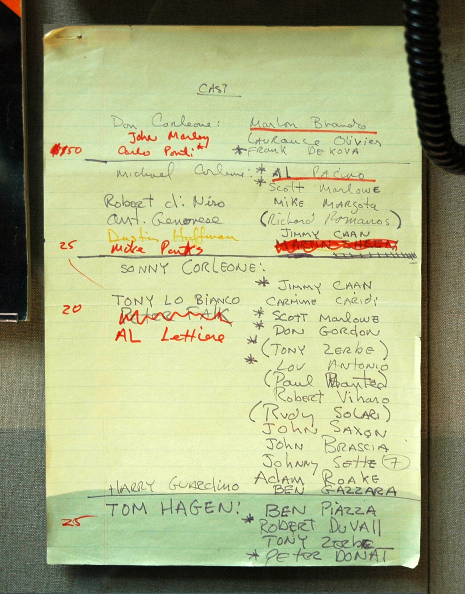
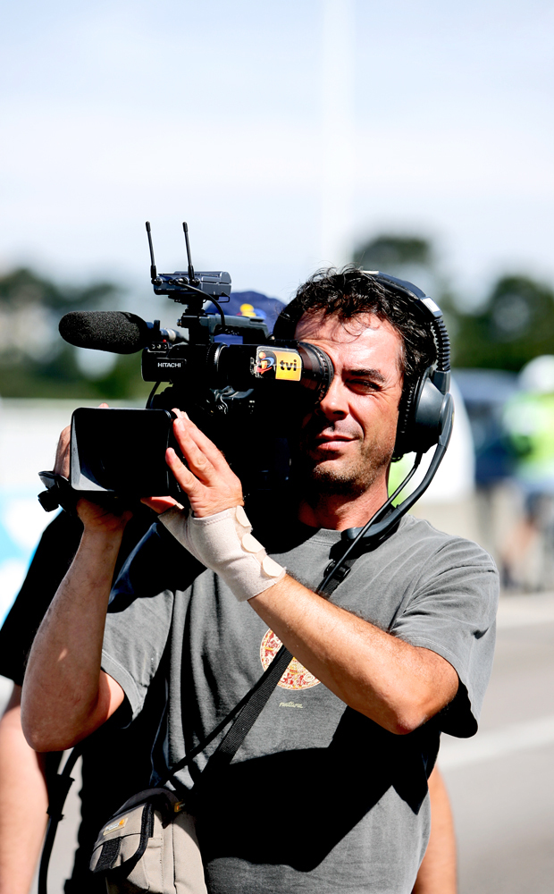
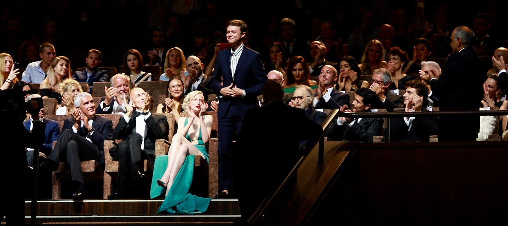

LE DIRECTEUR
DE CASTING
Celui qui trouve, dans une salle pleine d'inconnus, la seule personne qui rendra un personnage écrit soudain réel.
Le casting est la dernière écriture du personnage avant le tournage.
Un même rôle, joué par deux acteurs différents, donne deux films différents. Le directeur de casting ne "trouve" pas un acteur — il devine ce que chaque acteur ferait du rôle avant même l'avoir vu jouer.
🔍 Ce qu'il cherche
Pas "le plus beau" ou "le plus connu" — celui dont la présence naturelle recoupe ce que le personnage doit porter.
🤝 Son allié
Il défend les acteurs qu'il propose devant le réalisateur et les producteurs — c'est un défenseur autant qu'un juge.
👂 Sa vraie compétence
Repérer en 90 secondes d'audition ce qu'une carrière entière pourrait révéler.
Neuf chapitres, du script à la distribution finale.
Le rôle du directeur de casting
Il travaille en amont du tournage, en lien direct avec le réalisateur et les producteurs — il ne décide pas seul, il propose, argumente, organise les auditions et les callbacks.
- Marion Dougherty — New York, années 1950-1969 : considérée comme l'inventrice du métier aux États-Unis, Dougherty travaillait depuis un petit bureau de Manhattan en cherchant des acteurs dans les théâtres off-Broadway et les cafés. Pour Midnight Cowboy (John Schlesinger, 1969), elle a proposé Dustin Hoffman pour Ratso Rizzo et Jon Voight pour Joe Buck — deux castings entièrement à contre-emploi. Schlesinger était sceptique ; le film a remporté l'Oscar du meilleur film. Dougherty avait compris avant tout le monde que la fonction dramatique primait sur l'évidence physique.
- Juliet Taylor — Woody Allen depuis "Annie Hall" (1977) : Taylor a collaboré avec Allen pendant plus de trente ans, devenant la mémoire humaine de son cinéma. Elle a casté Cate Blanchett pour Blue Jasmine (2013) en convaincant Allen — réticent — qu'une actrice australienne pouvait incarner une bourgeoise new-yorkaise en effondrement. Sa relation avec Allen illustre ce que signifie être co-auteur d'une filmographie : Taylor connaissait les types qu'Allen cherchait avant même qu'il les formule.
- Lynn Stalmaster — "Star Wars" (1977) et l'Oscar honorifique 2016 : premier directeur de casting à recevoir un Oscar honorifique dans l'histoire de l'Académie. Pour Star Wars, Stalmaster a recommandé Harrison Ford après l'avoir vu lire les répliques de Han Solo face aux candidats au rôle de Luke Skywalker — Ford jouait un rôle de service sur le tournage. Stalmaster a reconnu que Ford incarnait le personnage de l'intérieur d'une manière que les "vrais" candidats ne produisaient pas.
Écris un brief de rôle
- Décris un personnage imaginaire en 4 lignes destinées à un directeur de casting — âge, énergie, ce qui doit se lire immédiatement à l'écran.
Décoder un personnage

Avant de chercher un acteur, il faut comprendre ce que le personnage fait vraiment dans l'histoire — son objectif, sa fonction dramatique — au-delà de sa description physique.
- Boyhood (2014) — Fern Champion & Mark Paladini : ils devaient trouver Ellar Coltrane à l'âge de 6 ans pour un film qui se tournerait sur 12 ans. Ils n'ont pas cherché "un beau gamin de 6 ans" — ils ont cherché quelqu'un dont la présence naturelle pourrait porter une vie entière à l'écran. La fonction dramatique (devenir quelqu'un, sous nos yeux) primait absolument sur toute description physique.
- The Dark Knight (2008) — John Papsidera : Heath Ledger n'était pas dans le brief initial pour le Joker. Papsidera et Nolan ont décidé de tester Ledger en partant de la question "que doit faire ce personnage dans l'histoire ?" — déstabiliser Gotham depuis l'intérieur, être l'imprévisible pur. Cette fonction appelait quelqu'un qu'on n'attendait pas.
- Marion Dougherty — Midnight Cowboy (1969) : Dougherty a casté Dustin Hoffman dans Ratso Rizzo en ignorant sa description physique (le script décrivait un homme beaucoup plus grand, plus vieux). Elle a décrit Hoffman comme "quelqu'un dont la fonction est de révéler ce que Jon Voight ne peut pas voir" — une lecture dramatique, pas physique.
Décris un personnage par sa fonction
- Prends un personnage secondaire d'un film que tu connais.
- Décris-le sans aucun détail physique — seulement sa fonction dans l'histoire.
L'appel à candidature
Le "breakdown" est l'annonce envoyée aux agents décrivant chaque rôle — un breakdown vague attire des centaines de candidatures hors sujet, un breakdown précis attire les bonnes personnes.
- Mad Max: Fury Road (George Miller, 2015) — breakdown pour Furiosa : le breakdown circulé aux agents décrivait sobrement "femme, 30-45 ans, physique imposant, capable de jouer l'autorité physique sans explication verbale, expérience action non obligatoire". Cette formulation ouverte sur l'expérience action a permis à l'agent de Charlize Theron de la proposer — elle n'avait jamais fait de film d'action pur. Le breakdown précis sur l'énergie recherchée (autorité physique muette) a attiré la bonne candidate.
- Brooklyn (John Crowley, 2015) — breakdown pour Eilis Lacey : la directrice de casting Sharon Pocock a rédigé un breakdown mentionnant "irlandaise ou accent irlandais parfaitement convaincant, luminosité naturelle à l'écran, 25-35 ans, capable de jouer la croissance sans le signaler". Ce critère de "luminosité naturelle" — critère d'énergie, pas physique — a attiré plus de 500 candidatures, dont Saoirse Ronan, retenue après sa première lecture. Un breakdown qui nomme l'énergie émotionnelle plutôt que l'apparence génère des candidatures plus justes.
- Inception (Christopher Nolan, 2010) — breakdown pour Arthur : le breakdown décrivait "30-40 ans, peut jouer le rigoureux, physique neutre, présence discrète derrière une précision absolue". Juliet Blake, productrice exécutive, a proposé Joseph Gordon-Levitt spontanément avant même l'ouverture officielle du breakdown aux agents — elle avait reconnu dans ce profil d'énergie quelqu'un qu'elle avait en tête. La précision du breakdown a permis de valider une proposition intuitive avant même d'ouvrir la recherche.
Écris une annonce de rôle
- Rédige un breakdown de 4 lignes pour un rôle secondaire — âge, physique utile, énergie, une ligne de dialogue type.
Diriger une audition

Une bonne audition met l'acteur à l'aise avant de le juger — le trac fausse tout. Le directeur de casting donne le contexte de la scène, jamais juste "joue".
- The Dark Knight (2008) — Christopher Nolan & John Papsidera : Nolan filmait les auditions lui-même avec une simple caméra vidéo, assis proche de l'acteur, lui parlant calmement avant de démarrer. Ledger a demandé à faire l'audition dans le noir complet pour tester si la présence fonctionnait sans voir le visage. Nolan a accepté — signe d'une direction d'audition ouverte à l'inattendu.
- Meryl Streep — The Deer Hunter (1978) — Lynn Stalmaster : Streep n'était pas dans la liste initiale. Stalmaster l'a vue dans une pièce de théâtre off-Broadway et a arrangé une rencontre informelle avec Michael Cimino — une conversation, pas une audition formelle. Le contexte détendu a révélé exactement la qualité de présence qu'ils cherchaient.
- Marion Dougherty — sa méthode documentée : Dougherty était connue pour accueillir elle-même les acteurs à la porte de son bureau, leur offrir un café, et parler 10 minutes de n'importe quoi avant que la caméra s'allume. Elle disait qu'un acteur détendu en dit plus en 30 secondes qu'un acteur paniqué en 5 minutes.
Prépare une consigne d'audition
- Choisis une courte scène.
- Écris le contexte que tu donnerais à un acteur avant qu'il la joue — pas la scène elle-même, juste ce qu'il doit savoir.
Lire une bande d'essai
De plus en plus d'auditions se font par vidéo — savoir lire une self-tape (cadrage, lumière, mais surtout la présence brute de l'acteur) sans se laisser distraire par une qualité technique imparfaite.
- Timothée Chalamet — Call Me by Your Name (2017) : sa self-tape pour le rôle d'Elio a été tournée avec un éclairage basique dans un appartement, sans réalisateur présent. Luca Guadagnino et la directrice de casting ont immédiatement identifié quelque chose d'irréductible dans sa présence — la technique imparfaite était invisible derrière ce qui se passait dans ses yeux.
- Post-Covid 2020-2021 — généralisation des self-tapes : pendant la pandémie, des productions entières ont casté leurs films uniquement par self-tape. Des directeurs de casting comme Allison Jones (Judd Apatow) ont développé des grilles de lecture spécifiques : ignorer les 3 premières secondes (prise en main de l'espace) et regarder uniquement la qualité d'écoute entre les répliques.
- Tom Holland — Spider-Man (2015) — Sarah Finn : Holland a envoyé une self-tape filmée dans sa chambre, avec sa mère lisant les répliques en face de lui. Finn a vu dans cette tape une légèreté et une physicalité que les auditions en salle n'auraient peut-être pas révélées — l'environnement détendu avait libéré quelque chose.
Analyse une self-tape imaginée
- Imagine deux self-tapes : une mal éclairée mais avec un jeu fort, une magnifique techniquement mais fade.
- Laquelle retiendrais-tu, et pourquoi ?
Le callback et l'alchimie de duo

Un acteur excellent seul peut ne pas fonctionner avec son partenaire à l'écran. Le callback teste l'alchimie, pas seulement le talent individuel.
- When Harry Met Sally (1989) — Jane Jenkins & Janet Hirshenson : Rob Reiner a fait jouer Billy Crystal et Meg Ryan ensemble dans plusieurs combinaisons avant de décider du rôle de chacun. L'alchimie entre eux dans la salle d'audition — leur façon naturelle de se couper la parole — a défini le ton de tout le film.
- Pulp Fiction (1994) — Ronnie Yeskel : le duo Travolta-Jackson s'est révélé lors d'un callback commun. Tarantino a demandé aux acteurs d'improviser une conversation ordinaire entre leurs personnages — l'aisance naturelle entre eux a changé l'écriture de leurs scènes communes.
- Cast Away (2000) — Mindy Marin : cas extrême d'alchimie — Tom Hanks jouait seul face à un ballon de volley. Marin raconte que tout le casting secondaire (les scènes de bureau, la femme) a été ajusté en callback pour créer le bon contraste avec ce que Hanks révélait seul. L'alchimie avec l'absence était le test.
Imagine un duo de callback
- Pour un rôle principal déjà casté, propose 2 candidats différents pour le rôle secondaire opposé, et ce que chaque duo produirait de différent.
Négocier avec les agents
Une fois le choix fait, il reste à négocier disponibilité, cachet, conditions — une relation de confiance durable avec les agents facilite chaque futur projet.
- Five Easy Pieces (Bob Rafelson, 1970) — Toni Basil et Jack Nicholson : Toni Basil, alors directrice de casting, devait négocier avec l'agent de Jack Nicholson pour un budget de production serré. L'agent demandait pour Nicholson un cachet équivalant au double de l'enveloppe casting totale du film. Basil a contourné l'impasse en argumentant sur la valeur artistique du rôle pour la carrière de Nicholson — un Bobby Dupea réussi ouvrirait des portes que l'argent seul ne pouvait pas acheter. Nicholson a accepté un cachet réduit. Le film a lancé sa carrière internationale.
- The Social Network (David Fincher, 2010) — Laray Mayfield et Andrew Garfield : Laray Mayfield, directrice de casting, devait convaincre l'agent d'Andrew Garfield que le rôle d'Eduardo Saverin — second rôle dans un film de Fincher — valait plus stratégiquement qu'un premier rôle dans une production de moindre envergure. L'argument n'était pas financier : c'était la question de qui voulait-on voir diriger Garfield à ce moment de sa carrière. L'agent a cédé. Garfield a enchaîné sur Spider-Man deux ans plus tard.
- Moonlight (Barry Jenkins, 2016) — Yesi Ramirez et les comédiens non professionnels : Yesi Ramirez devait intégrer au casting des habitants réels du quartier de Liberty City à Miami pour les seconds rôles de communauté. Les contrats syndicaux standard ne s'appliquaient pas à des non-professionnels. Elle a dû négocier des contrats dérogatoires au minimum syndical avec l'accord du syndicat, en garantissant en échange un encadrement professionnel complet sur le plateau. Un cas rare où la négociation ne portait pas sur le cachet mais sur le cadre légal du travail de comédiens sans statut.
Liste tes priorités de négociation
- Pour un rôle donné, classe par ordre d'importance : cachet, dates de disponibilité, conditions de tournage.
Diversité et justesse de représentation
Le casting façonne qui se voit représenté à l'écran — une question artistique autant qu'une responsabilité, à prendre en compte dès l'écriture du breakdown.
- Pose (FX, 2018) — Janet Mock, Ryan Murphy et le casting trans : pour la série retraçant la scène ballroom trans et afro-latine de New York dans les années 1980-1990, Janet Mock et Ryan Murphy ont posé une condition non négociable dès le développement : tous les personnages trans principaux seraient interprétés par des actrices trans. C'était une première dans l'histoire d'une série mainstream américaine de grand réseau. Le casting comprenait MJ Rodriguez, Indya Moore et Billy Porter — plusieurs étaient inconnus avant la série. La décision artistique et politique était indissociable.
- Crazy Rich Asians (Jon M. Chu, 2018) — le casting intégralement asiatique-américain : Jon M. Chu a conditionné sa signature à la réalisation du film à une garantie de Warner Bros. : le casting principal serait intégralement composé d'acteurs d'origine asiatique. La dernière production hollywoodienne avec un tel casting remontait à The Joy Luck Club (1993), soit 25 ans plus tôt. Chu savait que le film serait regardé comme un signal politique autant qu'artistique — et l'a assumé comme une contrainte créative, pas un compromis.
- Black Panther (Ryan Coogler, 2018) — Sarah Finn et la diversité africaine : Sarah Finn, directrice de casting du MCU depuis Iron Man (2008), a travaillé à distinguer les origines africaines et afro-américaines au sein du casting de Wakanda. Chadwick Boseman (américain), Lupita Nyong'o (kényane-mexicaine), Danai Gurira (zimbabwéenne-américaine) — le casting reflétait délibérément la diversité du continent africain plutôt qu'une représentation monolithique. Cette précision n'était pas dans le script : elle venait de la directrice de casting.
Questionne un breakdown
- Reprends le breakdown de l'exercice 03.
- Vérifie : les critères physiques sont-ils vraiment nécessaires à l'histoire, ou juste une habitude ?
Construire une base de talents
Un bon directeur de casting garde la mémoire des acteurs vus, même non retenus — le rôle d'aujourd'hui refusé peut être le rôle parfait de demain.
- Lynn Stalmaster — 40 ans de fiches papier : avant les bases de données numériques, Stalmaster maintenait un système de fiches cartonnées sur plus de 10 000 acteurs, classées par type physique, capacités spéciales (accent, instrument de musique, sport), et notes personnelles sur leur énergie en audition. Ce fichier physique, tenu pendant quatre décennies, lui permettait de proposer en quelques minutes un acteur vu dix ans plus tôt pour un rôle spécifique. Il a été décrit après sa mort comme un actif non remplaçable de l'industrie.
- Sarah Finn — la base de données du MCU depuis "Iron Man" (2008) : Finn a maintenu pendant quinze ans une base de données de tous les acteurs vus, testés ou simplement identifiés pour des rôles Marvel — y compris des rôles qui n'existaient pas encore à l'écriture. Certains acteurs ont été notés lors d'une audition pour un rôle, puis rappelés cinq ans plus tard pour un personnage différent créé après leur première rencontre. La base de données de Finn est une des raisons pour lesquelles le MCU a maintenu une cohérence de ton de casting sur plus de vingt films.
- Juliet Taylor — le rappel systématique aux acteurs non retenus : Taylor est connue dans l'industrie pour une pratique rare : rappeler personnellement chaque acteur non retenu après une décision finale, pour l'informer et expliquer brièvement pourquoi un autre choix avait été fait. Cette pratique — coûteuse en temps, sans obligation professionnelle — lui a valu une loyauté sans équivalent de la part des agents et acteurs, qui lui proposaient leurs meilleurs clients en premier parce qu'ils savaient que leurs artistes seraient traités avec considération même en cas de refus.
Documente un talent repéré
- La prochaine fois que tu vois une performance qui te marque, note en 3 lignes ce qui t'a frappé — pour t'en souvenir plus tard.
Deux philosophies du casting.
Choisir un acteur dont la présence physique et l'énergie collent instantanément à l'idée qu'on se fait du personnage — rapide, mais parfois prévisible.
Choisir délibérément un acteur qui ne "colle" pas sur le papier — un risque qui peut révéler une lecture du rôle que personne n'avait anticipée.
Bibliographie et ressources.
Le petit quiz de fin de parcours.
NIVEAU 1 — BASES1. Le role principal d'un directeur de casting est de :
NIVEAU 1 — BASES2. Le «breakdown» envoye aux agents sert a :
NIVEAU 2 — APPLICATION3. Le callback sert principalement a :
NIVEAU 2 — APPLICATION4. Pourquoi donner le contexte d'une scene avant une audition, plutot que juste «jouer» ?
NIVEAU 3 — ANALYSE5. Pourquoi ne pas juger une self-tape uniquement sur sa qualite technique ?
NIVEAU 3 — ANALYSE6. En quoi le casting faconne-t-il une responsabilite au-dela du choix artistique ?
NIVEAU 4 — EXPERT7. Le casting a contre-emploi consiste a :
NIVEAU 4 — EXPERT8. Pourquoi un bon directeur de casting garde-t-il la memoire d'acteurs non retenus ?
NIVEAU 5 — MAÎTRISE9. Pourquoi le breakdown precis et le contre-emploi ne sont-ils pas contradictoires malgre les apparences ?
NIVEAU 5 — MAÎTRISE10. En quoi la memoire des acteurs non retenus et le callback relevent-ils de la meme vision a long terme du casting ?